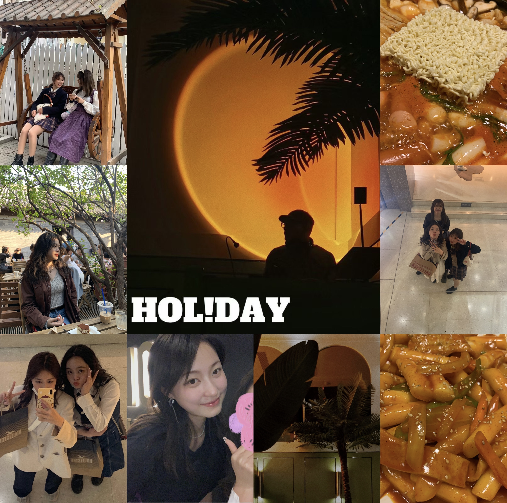

All about my vlog
我为什么开始做vlog呢？这其实得从去年那个暑假说起。去年暑假返校时 距离开学还有几天，我就打算好好逛逛武汉。我的朋友们很多都是vlogger，做了很多让人看了会感觉到快乐和幸福的视频，在我朋友的鼓励之下，我就开始尝试第一次做vlog，把我在武汉的这几天用视频的形式记录下来。
从一开始举起相机，对着镜头说话，再到剪辑视频并为视频配音，最后再上传这一系列的操作都会让人乐在其中，并且会使人感到幸福。我把我的第一个vlog发在了微博上以后得到了朋友们的一致好评和鼓励， 因为都是很亲近很爱我的朋友，所以大家也能跟我一起分享快乐。后来我就有了想要把我的日常生活或者是旅游经历记录下来的想法，一回生二回熟。到目前为止我已经制作了5个vlog，除开第一个剪辑得有点粗糙的视频以外， 剩下的vlog我都全部发在了我的微博首页和B站首页。
现在剪辑vlog也成了我业余生活中最喜欢的一种爱好了，不仅仅是在分享生活，更是在与屏幕前的大家进行交流，我也因此收获了一些朋友，这是意外之喜。Vlog makes my life better.下图是我第四期vlog的封面：
Vlog的意思是:video blog，也就是自己的视频博客，用视频的放式记录生活。我主要的vlog都post在B站和微博上，这也是很多vlogger的上传空间。
我b站帐号的首页是Brwonie的B站个人空间。这里面有我制作的4个完整的vlog视频，其分别是我在北京、天津旅游的一些旅行vlog。
第一个vlog发布于去年冬季的11月份，那时我去了北京与朋友会面，秋冬的北京美得让人惊艳。我将这一次的游记分剪为三个视频，分别是我三天的日常。整个vlog不仅有我在北京的游记，也有我去天津的一些记录。我去了香山、南锣鼓巷、什刹海、数字博物馆、三里屯等等。非常值得一提的是，秋天的香山特别美，我也很感激能够用视频的方式将它记录了下来。请欣赏： VLOG 1:在北京的那些日子、 VLOG 2:局气、香山、美美长安街、 VLOG 3:voyage 南锣鼓巷 三里屯。
最新的一个vlog呢，也是在北京记录的。这是我今年四月份去北京的时候的一些日常，这一次的旅行不仅仅只是我一人，更重要的是和好朋友在一起非常开心，我把这一次的vlog命名为“快乐的神经递质结构”。这也是我自认为剪辑得最好的一个视频了，在每一次的剪辑中我都不断地在完善和熟练剪辑技术，也在不断进步音乐的选择与搭配。 这个vlog有近20多分钟，算是一个比较长的vlog，是4天记录的总和。这一次的vlog不仅仅在游记上我很喜欢，我也很喜欢音乐的搭配，尤其是夜晚在胡同里灯光昏暗乱窜的那几幕，让我至今记忆犹新，分外撩拨也迷人。请移步：VLOG 4:April
做vlog真的没有大家想象的那么难，我很早就有做vlog的想法了，但因为嫌麻烦和害羞就劝退了好多次。因为我的朋友是vlogger，我每次看她的vlog我都觉得很开心，看朋友的vlog比看知名视频up主的vlog会更加有参与感，因此愉悦感也加倍了。 刚开始一头懵自己学习剪辑的时候其实还是有一点的难度，但万事开头难，只要上手了以后一切都开始水到渠成。但还有一个重要的因素，希望大家都能够自信一点举起相机，不要太害羞。我有些时候因为害羞没记录当下发生的事情觉得很可惜，所以一定要好自信哦！ 如果有想做vlog想法的话：just do it! Now!